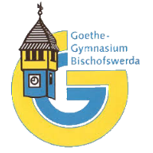
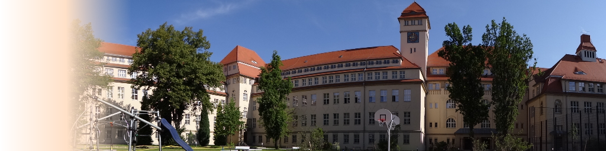

Herzlich Willkommen...
Unsere Angebote für interessierte Grundschüler und Eltern
| Grundschultage | fallen aus | Termine: |
| keine |
Wir bieten den Grundschulen im Rahmen der Schullaufbahnberatung in Klasse 4 Projekttage an, an denen die gesamte Klasse aber auch einzelne Schüler teilnehmen können. Die Kinder erhalten an diesem Tag einen kleinen Einblick, was es heißt, am Gymnasium zu lernen. Sie experimentieren, arbeiten im künstlerisch-musischen Bereich und nutzen die Möglichkeit, sich sportlich zu betätigen.
| „Mit Schlaufuchs auf Entdeckertour durch die Zwergenakademie“ |
Eröffnung fällt aus |
Lernwerkstätten für interessierte Schüler der Klassen 4

|
Ihr Kind hat Spaß an praktischen Dingen, Entdeckerlaune oder möchte seinen speziellen Interessen nachgehen? In unseren Lernwerkstätten kann Ihr Kind experimentieren, musizieren, sich sportlich betätigen, aber auch kreativ tätig sein. Der Besuch einer Lernwerkstatt ist ab November wieder möglich. |
| Nacht der offenen Tag |
Termin: Fr, 5.2.2021 |
August-König-Straße 12
01877 Bischofswerda
| Telefon: | 03594/7792190 |
| Fax: | 03594/77921930 |

